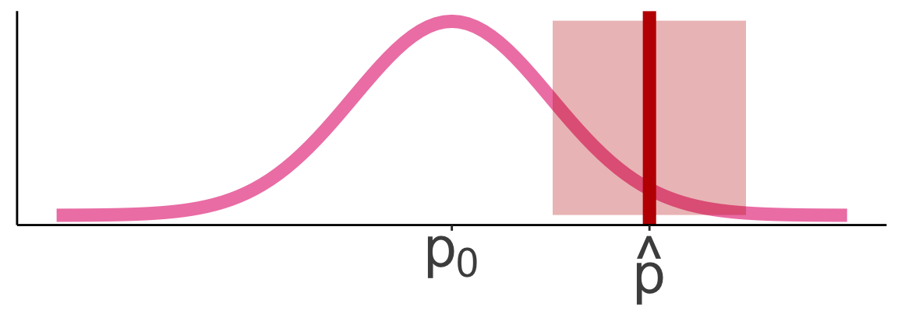
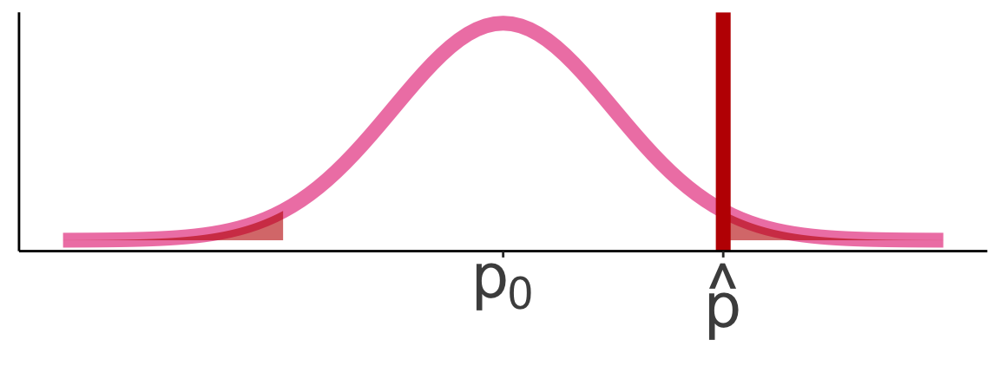
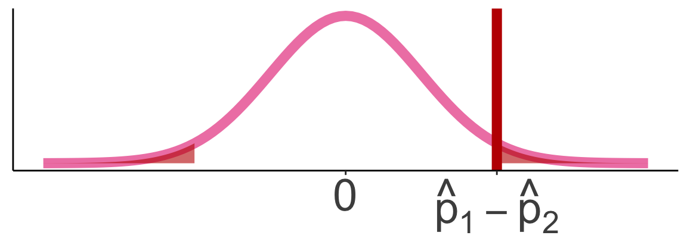
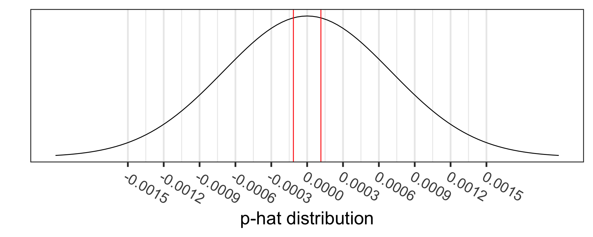
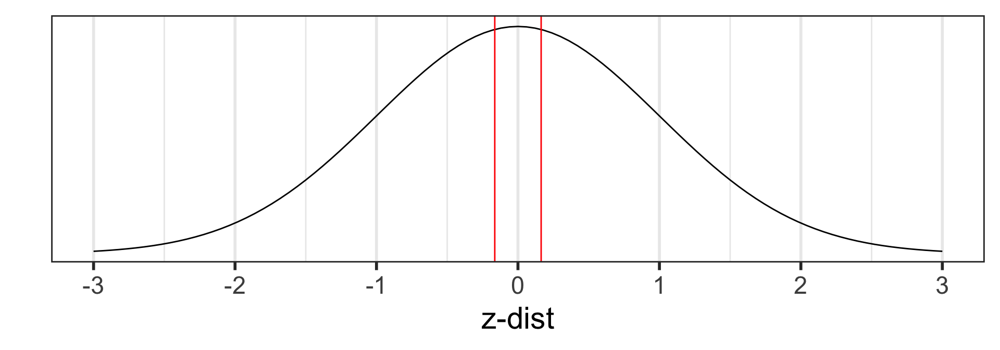

Lesson 15: Inference for a single proportion or difference of two (independent) proportions
TB sections 8.1-8.2
2024-11-25
Learning Objectives
Remind ourselves of the Normal approximation of the binomial distribution and define the sampling distribution of a sample proportion
Run a hypothesis test for a single proportion and interpret the results.
Construct and interpret confidence intervals for a single proportion.
Understand how CLT applies to a difference in binomial random variables
Run a hypothesis test for a difference in proportions and interpret the results.
Construct and interpret confidence intervals for a difference in proportions.
Where are we?

Learning Objectives
- Remind ourselves of the Normal approximation of the binomial distribution and define the sampling distribution of a sample proportion
Run a hypothesis test for a single proportion and interpret the results.
Construct and interpret confidence intervals for a single proportion.
Understand how CLT applies to a difference in binomial random variables
Run a hypothesis test for a difference in proportions and interpret the results.
Construct and interpret confidence intervals for a difference in proportions.
Moving to categorical outcomes
Previously, we have discussed methods of inference for numerical data
- Our outcomes were numerical values
- We were doing inference of means
- We found confidence intervals for means
- We ran hypothesis tests for means
- Above methods used can be extended to categorical data, such as binomial proportions or data in two-way tables
Categorical data arise frequently in medical research
- Disease outcomes and patient characteristics are often recorded in natural categories
- Examples: types of treatment received, whether or not disease advanced to a later stage, or whether or not a patient responded initially to a treatment
From Lesson 5: Binomial random variable
- One specific type of discrete random variable is a binomial random variable
Binomial random variable
\(X\) is a binomial random variable if it represents the number of successes in \(n\) independent replications (or trials) of an experiment where
- Each replicate has two possible outcomes: either success or failure
- The probability of success is \(p\)
- The probability of failure is \(q=1-p\)
A binomial random variable takes on values \(0, 1, 2, \dots, n\).
If a r.v. \(X\) is modeled by a Binomial distribution, then we write in shorthand \(X \sim \text{Binom}(n,p)\)
Quick example: The number of heads in 3 tosses of a fair coin is a binomial random variable with parameters \(n = 3\) and \(p = 0.5\).
From Lesson 5: Binomial distribution
Distribution of a Binomial random variable
Let \(X\) be the total number of successes in \(n\) independent trials, each with probability \(p\) of a success. Then probability of observing exactly \(k\) successes in \(n\) independent trials is
\[P(X = x) = \binom{n}{x} p^x (1-p)^{n-x}, x= 0, 1, 2, \dots, n \]
The parameters of a binomial distribution are \(p\) and \(n\).
If a r.v. \(X\) is modeled by a binomial distribution, then we write in shorthand \(X \sim \text{Binom}(n,p)\)
Mean and variance of a Binomial r.v
If \(X\) is a binomial r.v. with probability of success \(p\), then \(E(X) = np\) and \(\text{Var}(X)=np(1-p)\)
From Lesson 6: Normal Approximation of the Binomial Distribution
Also known as: Sampling distribution of \(\widehat{p}\)
If \(X\sim \text{Binomial}(n,p)\) and \(np>10\) and \(nq = n(1-p) > 10\)
- Ensures sample size (\(n\)) is moderately large and the \(p\) is not too close to 0 or 1
- Other resources use other criteria (like \(npq>5\) or \(np>5\))
THEN approximately \[X\sim \text{Normal}\big(\mu_X = np, \sigma_X = \sqrt{np(1-p)} \big)\]
Continuity Correction: Applied to account for the fact that the binomial distribution is discrete, while the normal distribution is continuous
- Adjust the binomial value (# of successes) by ±0.5 before calculating the normal probability.
- For \(P(X \leq k)\) (Binomial), you would instead calculate \(P(X \leq k + 0.5)\) (Normal approx)
- For \(P(X \geq k)\) (Binomial), you would instead calculate \(P(X \leq k - 0.5)\) (Normal approx)
Poll Everywhere Question 1
Sampling distribution of \(\hat{p}\)
- \(\hat{p}=\frac{X}{n}\) where \(X\) is the number of “successes” and \(n\) is the sample size.
- \(X \sim Bin(n,p)\), where \(p\) is the population proportion.
- For \(n\) “big enough”, the normal distribution can be used to approximate a binomial distribution:
\[X \sim N\Big(\mu = np, \sigma = \sqrt{np(1-p)} \Big)\]
- Since \(\hat{p}=\frac{X}{n}\) is a linear transformation of \(X\), we have for large n:
\[\hat{p} \sim N\Big(\mu_{\hat{p}} = p, \sigma_{\hat{p}} = \sqrt{\frac{p(1-p)}{n}} \Big)\]
- What is “big enough”? At least 10 successes and 10 failures are expected in the sample: \(np \geq 10\) and \(n(1-p) \geq 10\)
For proportions: Population parameters vs. sample statistics
Population parameter
- Proportion: \(p\), \(\pi\) (“pi”)
Sample statistic (point estimate)
- Sample proportion: \(\hat{p}\) (“p-hat”)
Approaches to answer a research question
- Research question is a generic form for a single proportion: Is there evidence to support that the population proportion is different than \(p_0\)?
Calculate CI for the proportion \(p\):

\[\hat{p} \pm z^* \cdot SE_{\hat{p}} = \hat{p} \pm z^* \cdot\sqrt{\frac{\hat{p}(1-\hat{p})}{n}}\]
- with \(z^*\) = z-score that aligns with specific confidence interval
Run a hypothesis test:

Hypotheses
\[\begin{align} H_0:& p = p_0 \\ H_A:& p \neq p_0 \\ (or&~ <, >) \end{align}\]
Test statistic
\[ z_{\hat{p}} = \frac{\hat{p} - p_0}{\sqrt{\frac{p_0\cdot(1-p_0)}{n}}} \]
R code: 1- and 2-sample proportions tests
x: Counts of successes (can have one x or a vector of multiple x’s)n: Number of trails (can have one n or a vector of multiple n’s)p: Null value that we think the population proportion isalternative: If alternative hypothesis is \(\neq\), \(<\), or \(>\)- Default is “two.sided” (\(\neq\))
conf.level= Confidence level (\(1-\alpha\))- Default is
0.05
- Default is
correct: Continuity correction, whether we should use it or not- Default is
TRUE(Nicky says keep it this way!)
- Default is
Learning Objectives
- Remind ourselves of the Normal approximation of the binomial distribution and define the sampling distribution of a sample proportion
- Run a hypothesis test for a single proportion and interpret the results.
Construct and interpret confidence intervals for a single proportion.
Understand how CLT applies to a difference in binomial random variables
Run a hypothesis test for a difference in proportions and interpret the results.
Construct and interpret confidence intervals for a difference in proportions.
Example: immune response to advanced melanoma
Looking for therapies that trigger an immune response to advanced melanoma
In a study where 52 patients were treated concurrently with two new therapies, nivolumab and ipilimumab
- 21 had an immune response.1
Outcome: whether or not each person has an immune response
Questions that can be addressed with inference…
What is the estimated population probability of immune response following concurrent therapy with nivolumab and ipilimumab? (calculate \(\hat{p}\))
What is the 95% confidence interval for the estimated population probability of immune response following concurrent therapy with nivolumab and ipilimumab? (95% CI of \(p\))
In previous studies, the proportion of patients responding to one of these agents was 30% or less. Do these results suggest that the probability of response to concurrent therapy is better than 0.30? (Hypothesis test of null of 0.3)
Reference: Steps in a Hypothesis Test
Check the assumptions
Set the level of significance \(\alpha\)
Specify the null ( \(H_0\) ) and alternative ( \(H_A\) ) hypotheses
- In symbols
- In words
- Alternative: one- or two-sided?
Calculate the test statistic.
Calculate the p-value based on the observed test statistic and its sampling distribution
Write a conclusion to the hypothesis test
- Do we reject or fail to reject \(H_0\)?
- Write a conclusion in the context of the problem
Step 1: Check the assumptions (easier to do after Step 3)
The sampling distribution of \(\hat{p}\) is approximately normal when
The sample observations are independent, and
At least 10 successes and 10 failures are expected in the sample: \(np_0 \geq 10\) and \(n(1-p_0) \geq 10\).
- Since \(p\) is unknown, it is necessary to substitute \(p_0\) (the null value) for \(p\) when using the standard error to conduct hypothesis tests
- Because we are assuming the standard error of the null hypothesis!
- For the example, we have \(p_0 = 0.30\)
- We check: \(n p_0 = 52 \cdot 0.3 = 15.6 > 10\)
- We check: \(n (1- p_0) = 52 (1 -0.3)= 36.4 > 10\)
Step 2: Set the level of significance
Before doing a hypothesis test, we set a cut-off for how small the \(p\)-value should be in order to reject \(H_0\).
Typically choose \(\alpha = 0.05\)
- See Lesson 11: Hypothesis Testing 1: Single-sample mean
Step 3: Null & Alternative Hypotheses (1/2)
Notation for hypotheses (for paired data)
Hypotheses test for example
We call \(p_0\) the null value (hypothesized population mean difference from \(H_0\))
\(H_A: p \neq p_0\)
- not choosing a priori whether we believe the population proportion is greater or less than the null value \(p_0\)
\(H_A: p < p_0\)
- believe the population proportion is less than the null value \(p_0\)
\(H_A: p > p_0\)
- believe the population population proportion is greater than the null value \(p_0\)
- \(H_A: p \neq p_0\) is the most common option, since it’s the most conservative
Step 3: Null & Alternative Hypotheses (2/2)
Null and alternative hypotheses in words and in symbols.
One sample test
\(H_0\): For individuals who have advanced melanoma and received a treatment of nivolumab and ipilimumab, the population proportion of immune response is 0.30
\(H_A\): For individuals who have advanced melanoma and received a treatment of nivolumab and ipilimumab, the population proportion of immune response is NOT 0.30
\[\begin{align} H_0:& p = 0.30\\ H_A:& p \neq 0.30\\ \end{align}\]
Step 4: Test statistic
Sampling distribution of \(\hat{p}\) if we assume \(H_0: p=p_0\) is true:
\[\hat{p} \sim N\left(\mu_{\hat{p}} = p, \sigma_{\hat{p}} = \sqrt{\frac{p(1-p)}{n}} \right) \sim N\left( \mu_{\hat{p}}=p_0, \sigma_{\hat{p}}=\sqrt{\frac{p_0\cdot(1-p_0)}{n}} \right)\]
Test statistic for a one sample proportion test:
\[ \begin{aligned} \text{test stat} = & \frac{\text{point estimate}-\text{null value}}{SE}\\ z_{\hat{p}} = & \frac{\hat{p} - p_0}{\sqrt{\frac{p_0\cdot(1-p_0)}{n}}} \end{aligned} \]
Step 4: Test statistic
From our example: Recall that \(\hat{p} = \dfrac{21}{52}= 0.4038\), \(n=52\), and \(p_0 = 0.30\)
The test statistic is:
\[ \begin{align} z_{\hat{p}} &= \frac{\hat{p} - p_0}{\sqrt{\frac{p_0\cdot(1-p_0)}{n}}} = \frac{21/52 - 0.30}{\sqrt{\frac{0.30\cdot(1-0.30)}{52}}} = 1.6341143 \end{align} \]
- Let’s see the z-score on a Z-distribution (Standard Normal curve)
Poll Everywhere Question 2
Step 5: p-value
The p-value is the probability of obtaining a test statistic just as extreme or more extreme than the observed test statistic assuming the null hypothesis \(H_0\) is true.
Step 4-5: test statistic and p-value together using prop.test()
1-sample proportions test with continuity correction
data: 21 out of 52, null probability 0.3
X-squared = 2.1987, df = 1, p-value = 0.1381
alternative hypothesis: true p is not equal to 0.3
95 percent confidence interval:
0.2731269 0.5487141
sample estimates:
p
0.4038462 Tidying the output of prop.test()
| estimate | statistic | p.value | parameter | conf.low | conf.high | method | alternative |
|---|---|---|---|---|---|---|---|
| 0.4038462 | 2.198718 | 0.1381256 | 1 | 0.2731269 | 0.5487141 | 1-sample proportions test with continuity correction | two.sided |
- Note: We expect some differences between the test statistic and p-value calculated by hand vs. by R. R uses a slightly different method to calculate.
Step 6: Conclusion to hypothesis test
\[\begin{align} H_0:& p = 0.30\\ H_A:& p \neq 0.30\\ \end{align}\]
- Recall the \(p\)-value = 0.1022348
- Use \(\alpha\) = 0.05.
- Do we reject or fail to reject \(H_0\)?
Conclusion statement:
- Stats class conclusion
- There is insufficient evidence that the (population) proportion of individuals who had an immune response is different than 0.30 ( \(p\)-value = 0.102).
- More realistic manuscript conclusion:
- In a sample of 52 individuals receiving treatment, 40.4% had an immune response, which is not different from 30% ( \(p\)-value = 0.102).
Learning Objectives
- Remind ourselves of the Normal approximation of the binomial distribution and define the sampling distribution of a sample proportion
- Run a hypothesis test for a single proportion and interpret the results.
- Construct and interpret confidence intervals for a single proportion.
Understand how CLT applies to a difference in binomial random variables
Run a hypothesis test for a difference in proportions and interpret the results.
Construct and interpret confidence intervals for a difference in proportions.
Conditions for one proportion: test vs. CI
Confidence interval conditions
- Independent observations
- The observations were collected independently.
- The number of successes and failures is at least 10:
\[n\hat{p} \ge 10, \ \ n(1-\hat{p})\ge 10\]
Hypothesis test conditions
- Independent observations
- The observations were collected independently.
- The number of expected successes and expected failures is at least 10.
\[n p_0 \ge 10, \ \ n(1-p_0)\ge 10\]
95% CI for population proportion
What to use for SE in CI formula?
\[\hat{p} \pm z^* \cdot SE_{\hat{p}}\]
Sampling distribution of \(\hat{p}\):
\[\hat{p} \sim N\left(\mu_{\hat{p}} = p, \sigma_{\hat{p}} = \sqrt{\frac{p(1-p)}{n}} \right)\]
Problem: We don’t know what \(p\) is - it’s what we’re estimating with the CI.
Solution: approximate \(p\) with \(\hat{p}\):
\[SE_{\hat{p}} = \sqrt{\frac{\hat{p}(1-\hat{p})}{n}}\]
- Note that I am not using a continuity correction here! This means our “by hand” calculation will be different than our R calculation
- Using the continuity correction is more widely accepted
- So I would suggest using R to calculate the confidence intervals when you can!
95% CI for population proportion of immune response by hand
95% CI for population mean difference \(p\):
\[\begin{align} \hat{p} &\pm z^* \cdot SE_{\hat{p}}\\ \hat{p} &\pm z^* \cdot \sqrt{\frac{\hat{p}(1-\hat{p})}{n}} \\ 0.404 &\pm 1.96\cdot \sqrt{\frac{0.404(1-0.404)}{52}} \\ 0.404 &\pm 1.96\cdot 0.068\\ 0.404 &\pm 0.133\\ (0.27&, 0.537) \end{align}\]
Used \(z^*\) = qnorm(0.975) = 1.96
“By hand” Conclusion:
We are 95% confident that the (population) proportion of individuals with an immune response is between 0.27 and 0.537.
95% CI for population proportion of immune response using R
- We can use R to get similar values
1-sample proportions test with continuity correction
data: 21 out of 52, null probability 0.5
X-squared = 1.5577, df = 1, p-value = 0.212
alternative hypothesis: true p is not equal to 0.5
95 percent confidence interval:
0.2731269 0.5487141
sample estimates:
p
0.4038462 R Conclusion:
We are 95% confident that the (population) proportion of individuals with an immune response is between 0.273 and 0.549.
- Note: We expect some differences between the confidence interval calculated by hand vs. by R. R uses a slightly different method to calculate.
Break Time!
Learning Objectives
Remind ourselves of the Normal approximation of the binomial distribution and define the sampling distribution of a sample proportion
Run a hypothesis test for a single proportion and interpret the results.
Construct and interpret confidence intervals for a single proportion.
- Understand how CLT applies to a difference in binomial random variables
Run a hypothesis test for a difference in proportions and interpret the results.
Construct and interpret confidence intervals for a difference in proportions.
Inference for difference of two independent proportions
\(\hat{p}_1-\hat{p}_2\)
- For means, we went from inferences on single sample mean to inferences on difference in means from two independent samples
- We can do the same thing for proportions
- We will go from inferences on single sample proportion to inferences on difference in proportions from two independent samples
Poll Everywhere Question 3
For difference in proportions: Population parameters vs. sample statistics
Population parameter
Population 1 proportion: \(p_1\), \(\pi_1\) (“pi”)
Population 2 proportion: \(p_2\), \(\pi_2\) (“pi”)
- Difference in proportions: \(p_1 - p_2\)
Sample statistic (point estimate)
Sample 1 proportion: \(\hat{p}_1\), \(\hat{\pi}_1\) (“pi”)
Sample 1 proportion: \(\hat{p}_2\), \(\hat{\pi}_2\) (“pi”)
- Difference in proportions: \(\hat{p}_1 - \hat{p}_2\)
Sampling distribution of \(\hat{p}_1-\hat{p}_2\)
- \(\hat{p}_1=\frac{X_1}{n_1}\) and \(\hat{p}_2=\frac{X_2}{n_2}\),
- \(X_1\) & \(X_2\) are the number of “successes”
- \(n_1\) & \(n_2\) are the sample sizes of the 1st & 2nd samples
- Each \(\hat{p}\) can be approximated by a normal distribution, for “big enough” \(n\)
- Since the difference of independent normal random variables is also normal, it follows that for “big enough” \(n_1\) and \(n_2\)
\[\hat{p}_1 - \hat{p}_2 \sim N \left(\mu_{\hat{p}_1 - \hat{p}_2} = p_1 - p_2, ~~ \sigma_{\hat{p}_1 - \hat{p}_2} = \sqrt{ \frac{p_1\cdot(1-p_1)}{n_1} + \frac{p_2\cdot(1-p_2)}{n_2}} \right)\]
- What is “big enough”? At least 10 successes and 10 failures are expected in the sample: \(n_1p \geq 10\), \(n_1(1-p) \geq 10\), \(n_2p \geq 10\), and \(n_2(1-p) \geq 10\)
Approaches to answer a research question
- Research question is a generic form for a single proportion: Is there evidence to support that the population proportions are different from each other?
Calculate CI for the proportion difference \(p_1 - p_2\):
\[\hat{p}_1 - \hat{p}_2 \pm z^* \cdot SE_{\hat{p}_1 - \hat{p}_2}\]
- with \(z^*\) = z-score that aligns with specific confidence interval
Run a hypothesis test:

Hypotheses
\[\begin{align} H_0:& p_1 - p_2 = 0 \\ H_A:& p_1 - p_2 \neq 0 \\ (or&~ <, >) \end{align}\]
Test statistic
\[ z_{\hat{p}_1 - \hat{p}_2} = \frac{\hat{p}_1 - \hat{p}_2}{SE_{pool}} \]
Learning Objectives
Remind ourselves of the Normal approximation of the binomial distribution and define the sampling distribution of a sample proportion
Run a hypothesis test for a single proportion and interpret the results.
Construct and interpret confidence intervals for a single proportion.
Understand how CLT applies to a difference in binomial random variables
- Run a hypothesis test for a difference in proportions and interpret the results.
- Construct and interpret confidence intervals for a difference in proportions.
Motivating example: effectiveness of mammograms
A 30-year study to investigate the effectiveness of mammograms versus a standard non-mammogram breast cancer exam was conducted in Canada with 89,835 participants. Each person was randomized to receive either annual mammograms or standard physical exams for breast cancer over a 5-year screening period.
By the end of the 25-year follow-up period, 1,005 people died from breast cancer. The results are summarized in the following table.
Displaying the contingency table in R
| Group |
Death from breast cancer?
|
Total | |
|---|---|---|---|
| Yes | No | ||
| Control Group | 505 | 44405 | 44910 |
| Mammogram Group | 500 | 44425 | 44925 |
| Total | 1005 | 88830 | 89835 |
Reference: Steps in a Hypothesis Test
Check the assumptions
Set the level of significance \(\alpha\)
Specify the null ( \(H_0\) ) and alternative ( \(H_A\) ) hypotheses
- In symbols
- In words
- Alternative: one- or two-sided?
Calculate the test statistic.
Calculate the p-value based on the observed test statistic and its sampling distribution
Write a conclusion to the hypothesis test
- Do we reject or fail to reject \(H_0\)?
- Write a conclusion in the context of the problem
Before we start, we need to calculate the pooled proportion
- Often, our null hypothesis is that the two proportions are equal
- And that both populations are the same
- Thus, we calculate a pooled proportion to represent the proportion under the null distribution
\[\text{pooled proportion} = \hat{p}_{pool} = \dfrac{\text{total number of successes} }{ \text{total number of cases}} = \frac{x_1+x_2}{n_1+n_2}\]
- In this example:
\[\hat{p}_{pool} = \frac{x_1+x_2}{n_1+n_2} = \frac{500 + 505}{(500 + 44425) + (505 + 44405)} = 0.01119\]
Poll Everywhere Question 4
Step 1: Check the assumptions
Conditions:
- Independent observations & samples
- The observations were collected independently.
- In particular, observations from the two groups weren’t paired in any meaningful way.
- The number of expected successes and expected failures is at least 10 for each group - using the pooled proportion:
- \(n_1\hat{p}_{pool} \ge 10, \ \ n_1(1-\hat{p}_{pool}) \ge 10\)
- \(n_2\hat{p}_{pool} \ge 10, \ \ n_2(1-\hat{p}_{pool}) \ge 10\)
- In the example, we check:
- \(n_1\hat{p}_{pool}=44925 \cdot 0.0112 = 502.5839 \ge 10\)
- \(n_1(1-\hat{p}_{pool})= 44925 (1-0.0112) = 44422.42 \ge 10\)
- \(n_2\hat{p}_{pool}=44910 \cdot 0.0112 = 502.4161 \ge 10\)
- \(n_2(1-\hat{p}_{pool})= 44910 (1-0.0112) = 44407.58 \ge 10\)
Step 3: Null and Alternative Hypothesis test
Two samples test
\(H_0\): The difference in population proportions of deaths from breast cancer among people who received annual mammograms and annual physical check-ups is 0.
\(H_A\): The difference in population proportions of deaths from breast cancer among people who received annual mammograms and annual physical check-ups is not 0.
\[\begin{align} H_0:& p_{mamm} - p_{ctrl} = 0\\ H_A:& p_{mamm} - p_{ctrl} \neq 0\\ \end{align}\]
Step 4: Test statistic (1/2)
Sampling distribution of \(\hat{p}_1 - \hat{p}_2\): \[\hat{p}_1 - \hat{p}_2 \sim N \left(\mu_{\hat{p}_1 - \hat{p}_2} = p_1 - p_2, ~~ \sigma_{\hat{p}_1 - \hat{p}_2} = \sqrt{ \frac{p_1\cdot(1-p_1)}{n_1} + \frac{p_2\cdot(1-p_2)}{n_2}} \right)\]
Since we assume \(H_0: p_1 - p_2 = 0\) is true, we “pool” the proportions of the two samples to calculate the SE:
\[\text{pooled proportion} = \hat{p}_{pool} = \dfrac{\text{total number of successes} }{ \text{total number of cases}} = \frac{x_1+x_2}{n_1+n_2}\]
Test statistic:
\[ \text{test statistic} = z_{\hat{p}_1 - \hat{p}_2} = \frac{\hat{p}_1 - \hat{p}_2 - 0}{\sqrt{\frac{\hat{p}_{pool}(1-\hat{p}_{pool})}{n_1} + \frac{\hat{p}_{pool}(1-\hat{p}_{pool})}{n_2}}} \]
Step 4: Test statistic (2/2)
From our example: Recall that \(\hat{p}_1 = \dfrac{500}{44925}= 0.0111\), \(\hat{p}_2 = \dfrac{505}{44910}= 0.0112\), \(n_1=44925\), \(n_2=44910\), and \(\hat{p}_{pool} = 0.01119\)
The test statistic is:
\[ \begin{align} z_{\hat{p}_1 - \hat{p}_2} = \frac{\hat{p}_1 - \hat{p}_2 - 0}{\sqrt{\frac{\hat{p}_{pool}\cdot(1-\hat{p}_{pool})}{n_1} + \frac{\hat{p}_{pool}\cdot(1-\hat{p}_{pool})}{n_2}}} = \frac{0.0111 -0.0112}{\sqrt{\frac{0.01119\cdot(1-0.01119)}{44925} + \frac{0.01119\cdot(1-0.01119)}{44910}}} = -0.163933 \end{align} \]
- Let’s see the z-score on a Z-distribution (Standard Normal curve)
Step 5: p-value
The p-value is the probability of obtaining a test statistic just as extreme or more extreme than the observed test statistic assuming the null hypothesis \(H_0\) is true.


Calculate the p-value:
\[\begin{align} & 2 \cdot P(\hat{p}_1 - \hat{p}_2< 0.0111 - 0.0112) \\ &= P\left(Z_{\hat{p}_1 - \hat{p}_2} < \frac{0.0111 - 0.0112}{\sqrt{\frac{0.01119\cdot(1-0.01119)}{44925} + \frac{0.01119\cdot(1-0.01119)}{44910}}}\right) \\ &= 2 \cdot P(Z_{\hat{p}} > -0.164)\\ &= 0.8697839 \end{align}\]
Step 4-5: test statistic and p-value together using prop.test()
2-sample test for equality of proportions with continuity correction
data: c(505, 500) out of c(44910, 44925)
X-squared = 0.01748, df = 1, p-value = 0.8948
alternative hypothesis: two.sided
95 percent confidence interval:
-0.001282751 0.001512853
sample estimates:
prop 1 prop 2
0.01124471 0.01112966 Tidying the output of prop.test()
| estimate1 | estimate2 | statistic | p.value | parameter | conf.low | conf.high | method | alternative |
|---|---|---|---|---|---|---|---|---|
| 0.01124471 | 0.01112966 | 0.01747975 | 0.8948174 | 1 | -0.001282751 | 0.001512853 | 2-sample test for equality of proportions with continuity correction | two.sided |
- Note: We expect some differences between the test statistic and p-value calculated by hand vs. by R. R uses a slightly different method to calculate.
Step 6: Conclusion to hypothesis test
\[\begin{align} H_0:& p_{mamm} - p_{ctrl} = 0\\ H_A:& p_{mamm} - p_{ctrl} \neq 0\\ \end{align}\]
- Recall the \(p\)-value = 0.8698
- Use \(\alpha\) = 0.05
- Do we reject or fail to reject \(H_0\)?
Conclusion statement:
- Stats class conclusion
- There is insufficient evidence that the difference in (population) proportions of deaths from breast cancer among people who received annual mammograms and annual physical check-ups different (\(p\)-value = 0.87).
- More realistic manuscript conclusion:
- 1.11% of people receiving annual mammograms (n=44925) and 1.12% of people receiving annual physical exams (n=44925) died from breast cancer (\(p\)-value = 0.87).
Learning Objectives
Remind ourselves of the Normal approximation of the binomial distribution and define the sampling distribution of a sample proportion
Run a hypothesis test for a single proportion and interpret the results.
Construct and interpret confidence intervals for a single proportion.
Understand how CLT applies to a difference in binomial random variables
Run a hypothesis test for a difference in proportions and interpret the results.
- Construct and interpret confidence intervals for a difference in proportions.
Conditions for difference in proportions: test vs. CI
Confidence interval conditions
- Independent observations & samples
- The observations were collected independently.
- In particular, observations from the two groups weren’t paired in any meaningful way.
- The number of successes and failures is at least 10 for each group.
- \(n_1\hat{p}_1 \ge 10, \ \ n_1(1-\hat{p}_1) \ge 10\)
- \(n_2\hat{p}_2 \ge 10, \ \ n_2(1-\hat{p}_2) \ge 10\)
Hypothesis test conditions
- Independent observations & samples
- The observations were collected independently.
- In particular, observations from the two groups weren’t paired in any meaningful way.
- The number of expected successes and expected failures is at least 10 for each group - using the pooled proportion:
- \(n_1\hat{p}_{pool} \ge 10, \ \ n_1(1-\hat{p}_{pool}) \ge 10\)
- \(n_2\hat{p}_{pool} \ge 10, \ \ n_2(1-\hat{p}_{pool}) \ge 10\)
Poll Everywhere Question 5
95% CI for population difference in proportions
What to use for SE in CI formula?
\[\hat{p}_1 - \hat{p}_2 \pm z^* \cdot SE_{\hat{p}_1 - \hat{p}_2}\]
SE in sampling distribution of \(\hat{p}_1 - \hat{p}_2\)
\[\sigma_{\hat{p}_1 - \hat{p}_2} = \sqrt{ \frac{p_1\cdot(1-p_1)}{n_1} + \frac{p_2\cdot(1-p_2)}{n_2}} \]
Problem: We don’t know what \(p\) is - it’s what we’re estimating with the CI.
Solution: approximate \(p_1\), \(p_2\) with \(\hat{p}_1\), \(\hat{p}_2\):
\[SE_{\hat{p}_1 - \hat{p}_2} = \sqrt{ \frac{\hat{p}_1\cdot(1-\hat{p}_1)}{n_1} + \frac{\hat{p}_2\cdot(1-\hat{p}_2)}{n_2}}\]
95% CI for the population difference in proportions
95% CI for population mean difference \(p_1 - p_2\):
\[\begin{align} \hat{p}_1 - \hat{p}_2 &\pm z^* \cdot SE_{\hat{p}_1 - \hat{p}_2}\\ \hat{p}_1 - \hat{p}_2 &\pm z^* \cdot \sqrt{ \frac{\hat{p}_1\cdot(1-\hat{p}_1)}{n_1} + \frac{\hat{p}_2\cdot(1-\hat{p}_2)}{n_2}} \\ 0.01113 - 0.01124 &\pm 1.96 \cdot \sqrt{\frac{0.01113\cdot(1-0.01113)}{44925} + \frac{0.01124\cdot(1-0.01124)}{44910}}\\ 0.35 &\pm 1.96\cdot 0.001\\ 0.35 &\pm 0.002\\ (-0.002&, 0.002) \end{align}\]
Used \(z^*\) = qnorm(0.975) = 1.96
Interpretation:
We are 95% confident that the difference in (population) proportions of deaths due to breast cancer comparing people who received annual mammograms to annual physical check-ups is between -0.002 and 0.002.
95% CI for the population difference in proportions
- We can use R to get similar values
2-sample test for equality of proportions with continuity correction
data: c(505, 500) out of c(44910, 44925)
X-squared = 0.01748, df = 1, p-value = 0.8948
alternative hypothesis: two.sided
95 percent confidence interval:
-0.001282751 0.001512853
sample estimates:
prop 1 prop 2
0.01124471 0.01112966 R Conclusion:
We are 95% confident that the difference in (population) proportions of deaths due to breast cancer comparing people who received annual mammograms to annual physical check-ups is between -0.0013 and 0.0015.
- Note: We expect some differences between the confidence interval calculated by hand vs. by R. R uses a slightly different method to calculate.
Lesson 15 Slides